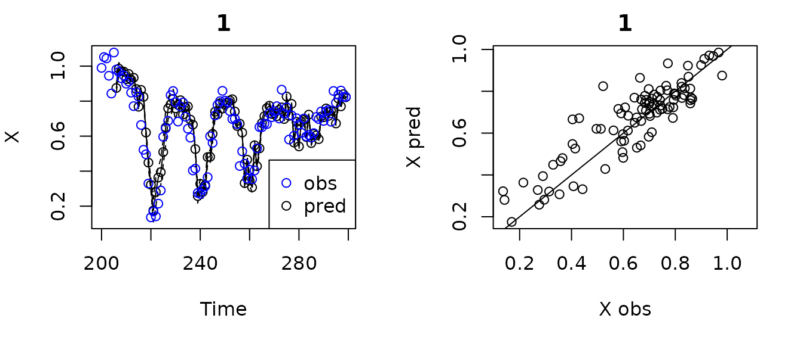
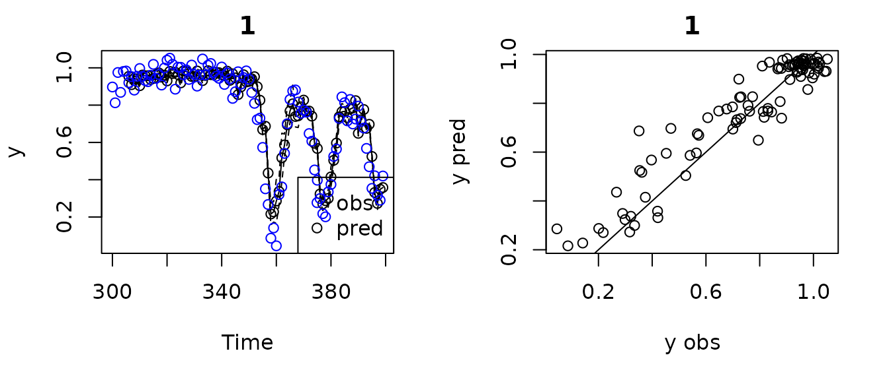
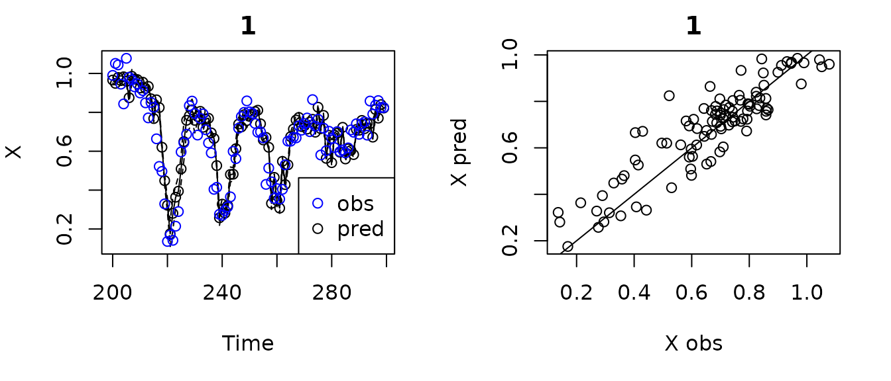
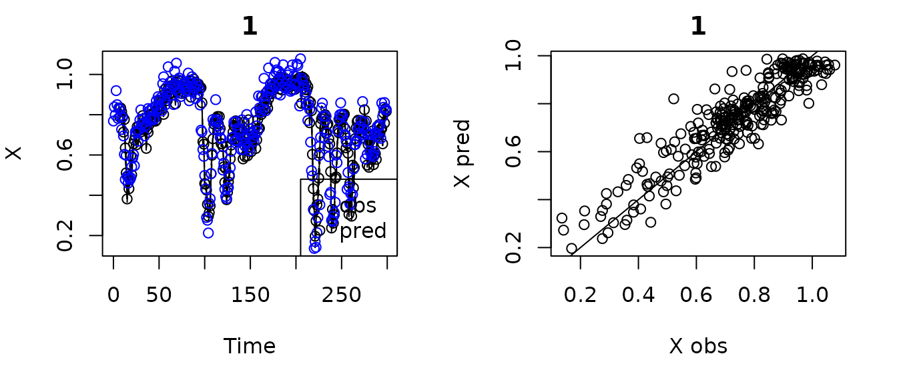
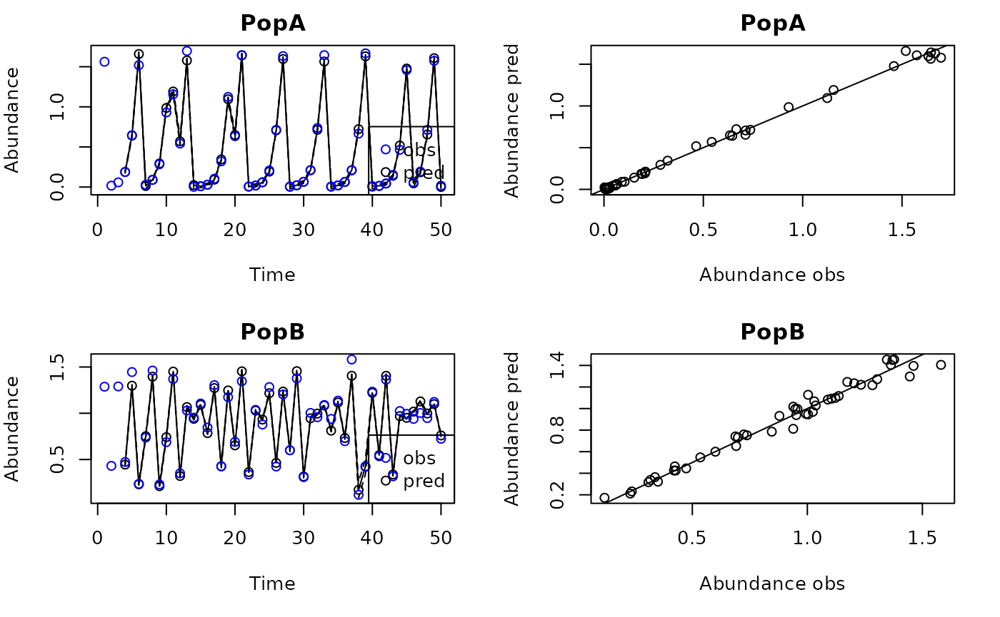

Extended Introduction to GPEDM
extendedintro.RmdMathematical foundation
The GP model fit by GPEDM is as described in Munch et
al. (2017). This model uses a mean function of 0 and a squared
exponential covariance function with one inverse length scale
hyperparameter
()
for each input
(predictor). The values of
tell you about the wiggliness of the function with respect to each
input: a value of 0 indicates no relationship (the function is flat),
low values of
indicate a mostly linear relationship (the function is very stiff), and
large values of
indicate more nonlinear relationships (the function is more wiggly). The
model, which is Bayesian, is as follows:
Where is the collection of hyperparameters , and the covariance function is
The package finds the optimal values of the hyperparameters (each , process variance , pointwise prior variance ) numerically using a likelihood gradient descent algorithm (Rprop), which finds the posterior mode. The priors on the inverse length scales are set up for automatic relevance determination (ARD): The priors have a mode at 0, meaning that if a predictor does not have a strong influence, its will go to 0 (effectively dropping it from the model). The priors also have mean such that the function on average has one local maximum or minimum with respect to that predictor, which imposes a wiggliness penalty on the estimated function. The priors for the variance terms are weakly informative.
Because of the assumed mean function of 0 and the length scale
priors, all the data (both the response variable and all predictor
variables) need to be centered on 0 and scaled to a standard deviation
of 1. Because this is standardization is always required, the
GPEDM functions will conveniently standardize all the
supplied data internally, and then backtransform all the outputs back to
their original units, so you don’t have to worry about this too
much.
Since the GP requires an inversion of the covariance matrix at every iteration of the fitting algorithm, it does not scale well (complexity scales as order ), and it becomes increasingly slow as the number of data points increases. It will become noticeably slow with more than several hundred datapoints, and extremely slow with more than 1000. Improving this is on Steve’s to-do list.
Model structures
There are basically two ways to specify a model structure.
E/tau Method: Supply a time series and values for and . The model fitting function will construct lags internally ( lags of with spacing ) and use those as predictors. This method is convenient, but has some limitations. First, it assumes a fixed , so you can’t use unevenly spaced lags. Second, there are limited ways in which covariates can be incorporated.
Custom Lags Method: Construct the lags yourself externally, and supply the exact response variable and the exact collection of predictor variables to use. The model fitting function will use those directly. This allows for the most flexibility and customization, in that you can use any response variable and any collection of lag predictors from any number of variables.
The timesteps (each row in your data table) have to be evenly spaced and in chronological order, otherwise the automatic lag construction will not work properly.
The model fitting function is fitGP. The data are
supplied to these functions under data. Here’s a table of
the most important parameters.
| Parameter | Description | Notes |
|---|---|---|
data |
Data frame containing the training data | Columns can be in any order. |
y |
Name of the response variable | Character or numeric column index. |
x |
Name(s) of the predictor variables | Character vector or numeric vector of column indices. |
E |
Embedding dimension (number of lags) | Positive integer. |
tau |
Time delay | Positive integer. No default. |
time |
Name of the time column | Optional, but recommended. If omitted, defaults to a numeric index. |
pop |
Name of population ID column | Required if your dataset contains time series from multiple populations. Could represent other types of replicate time series, not just populations. |
scaling |
Data standardization | Data are centered and scaled by default as required by the model.
Automatic scaling can be done across populations ("global",
the default) or within populations ("local"). Equivalent if
only one population. You can also scale the data yourself beforehand in
any manner you wish and set scaling="none". |
If E and tau are supplied, the model uses
the E/tau Method. If using the E/tau Method and multiple variables are
listed under x, fitGP uses
lags with spacing
of each variable. If E and tau are
omitted, the function will use the Custom Lags Method, using all the
variables in x as predictors.
The response variable (target y) in fitGP
is always ‘stationary’, in that the columns of x predict
the value of y in the same row, not in any other rows,
similar to other regression functions in R (equivalent to
Tp=0 in the package rEDM). The effective
forecast horizon defaults to
when using the E/tau Method, producing the model:
Variation in the forecast horizon (independently of tau)
can be attained using the Custom Lags Method and shifting the lags
appropriately. You would want a model of the following form, which
reverts to the form above when h=tau:
The following table gives the model structure that results when different combinations of inputs are supplied.
y |
x |
E, tau
|
resulting model |
|---|---|---|---|
| y | omitted or y | supplied | |
| y | x | supplied | |
| y | y, x | supplied | |
| y | x, z | supplied | |
| y | x, z | omitted | |
| y | x(t-1), z(t-1) | omitted | |
| y | y(t-a), y(t-b), x(t-c) | omitted | |
| y | y or y, x | omitted | Invalid models , |
Cross validation and prediction
Predicting with the GP has two stages (for a given E and
tau or set of predictors). First, you have to optimize
(fit) the hyperparameters (inverse length scales, variances) given the
training data. This is the slow part. Then, you can make predictions for
some test data given the hyperparameters and the training data. This
part is much faster. Because of this, the model fitting and model
prediction steps are broken up into two different functions. The
function fitGP does the model fitting. The
predict function is used to make predictions from a fitted
model. The function fitGP will (optionally) invoke
predict once internally and make one set of predictions if
you supply it with the inputs for predict. The function
predict, on its own, can be used as many times as you want
for as many test datasets as you want without having to retrain the
model. To arbitrarily change the training data without refitting the
hyperparameters, you can run fitGP with the hyperparameters
fixed, which will skip optimization (see argument
fixedpars, which also allow for a mixture of fixed and
estimated hyperparameters).
The training data are supplied under data in
fitGP. Test data are supplied (in a separate data frame)
under newdata in either predict or
fitGP. The column names used in the model need to appear in
both data and newdata. This is similar to
making predictions from other models in R.
To get predicted values using leave-one-out cross-validation, set
predictmethod = "loo" in either predict or
fitGP. This will conduct leave-one-out over all of the
training data. There are also a couple other predictmethod
options built in. The option lto (leave-timepoint-out) is
the same as leave-one-out except that is leaves out all points from a
given time (only relevant if there are multiple populations). For both
"loo" and "lto", an exclusion radius (Theiler
window) can be set using exclradius (defaults to 0). The
option sequential makes a prediction for each time point in
the training data, leaving out all future time points. Note that in all
of these methods, training data are iteratively omitted for the
predictions, but the hyperparameter values used are those obtained using
all of the training data (the model is not refit).
The function predict_seq also generates predictions for
a data frame newdata, but sequentially adds each new
observation to the training data and refits the model. This simulates a
real-time forecasting application. This prediction method is similar to
predictmethod="sequential" (leave-future-out), but in this
case, the future time points are not included in the training data used
to obtain the hyperparameters. It is also similar to the train/test
split using newdata, but in this case, the training data and model
hyperparameters are sequentially updated with each timestep. This method
is definitely slower than just fitting the hyperparameters once, but can
be worth doing to avoid annoying reviewer comments.
For iterated multistep predictions, check out the function
predict_iter.
Example data
Our example dataset will be the chaotic 3-species Hastings-Powell
model. There are simulated data from this model included in the
GPEDM package. We will add a bit of observation noise to
the data.
head(HastPow3sp)
#> Time X Y Z
#> 1 0 0.8000000 0.1000000 9.000000
#> 2 1 0.8293102 0.1036896 8.986057
#> 3 2 0.8399347 0.1090985 8.974955
#> 4 3 0.8398126 0.1159568 8.967575
#> 5 4 0.8332662 0.1242236 8.964660
#> 6 5 0.8223340 0.1339824 8.966918
n=nrow(HastPow3sp)
set.seed(1)
HastPow3sp$X=HastPow3sp$X+rnorm(n,0,0.05)
HastPow3sp$Y=HastPow3sp$Y+rnorm(n,0,0.05)
HastPow3sp$Z=HastPow3sp$Z+rnorm(n,0,0.05)
par(mfrow=c(3,1), mar=c(4,4,1,1))
plot(X~Time, data = HastPow3sp, type="l")
plot(Y~Time, data = HastPow3sp, type="l")
plot(Z~Time, data = HastPow3sp, type="l")Creating lags
The GPEDM function for making lags is
makelags, which makes lags
.
The lag is indicated after the underscore. If append=T, it
will return data with the lags appended, otherwise just the
lags.
gpedmlags <- makelags(data = HastPow3sp, y = c("X","Y"), E = 2, tau = 1, append = T)
head(gpedmlags)
#> Time X Y Z X_1 X_2 Y_1 Y_2
#> 1 0 0.7686773 0.08515657 8.956461 NA NA NA NA
#> 2 1 0.8384924 0.04452754 8.996594 0.7686773 NA 0.08515657 NA
#> 3 2 0.7981533 0.10966309 8.978425 0.8384924 0.7686773 0.04452754 0.08515657
#> 4 3 0.9195766 0.16553683 8.884442 0.7981533 0.8384924 0.10966309 0.04452754
#> 5 4 0.8497416 0.20392200 9.005202 0.9195766 0.7981533 0.16553683 0.10966309
#> 6 5 0.7813106 0.06534688 8.871301 0.8497416 0.9195766 0.20392200 0.16553683Model for a single time series
In this example, we split the original dataset (without lags) into a
training and testing set, and fit a model with some arbitrary embedding
parameters using the E/tau Method. For expediency we will put the test
data in fitGP as well to generate predictions with one
function call. You could omit it though.
#E/tau Method with training/test split
HPtrain <- HastPow3sp[1:200,]
HPtest <- HastPow3sp[201:300,]
gp_out1 <- fitGP(data = HPtrain, time = "Time",
y = "X", E = 3, tau = 2,
newdata = HPtest)The summary function quickly gives you the fitted values
of the inverse length scales phi for each predictor, the
variance terms, the
value for the training data (In-sample R-squared), and the
value for the test data (Out-of-sample R-squared) if test
data were provided. A crude plot of the observed and predicted values
can be obtained using plot. By default, plot
will plot the out-of-sample predictions (for the test data, or the
leave-one-out predictions if requested) if available.
summary(gp_out1)
#> Number of predictors: 3
#> Length scale parameters:
#> predictor posteriormode
#> phi1 X_2 0.12878
#> phi2 X_4 0.00832
#> phi3 X_6 0.06941
#> Process variance (ve): 0.1422683
#> Pointwise prior variance (sigma2): 2.648974
#> Number of populations: 1
#> In-sample R-squared: 0.8702953
#> Out-of-sample R-squared: 0.7764384
plot(gp_out1)
#> Plotting out of sample results.
The output of fitGP is a rather involved list object
containing everything needed to make prediction from the model (much of
which is for bookkeeping), but there are a few important outputs you may
want to look at and extract. See help(fitGP) for more
detail about the outputs.
#the values of the hyperparameters
gp_out1$pars
#> phi1 phi2 phi3 ve sigma2 rho
#> 0.12878249 0.00832415 0.06941378 0.14226828 2.64897436 0.50000000
#fits to the training data
head(gp_out1$insampresults, 10)
#> timestep pop predmean predfsd predsd obs
#> 1 0 1 NA NA NA 0.7686773
#> 2 1 1 NA NA NA 0.8384924
#> 3 2 1 NA NA NA 0.7981533
#> 4 3 1 NA NA NA 0.9195766
#> 5 4 1 NA NA NA 0.8497416
#> 6 5 1 NA NA NA 0.7813106
#> 7 6 1 0.8386267 0.010150692 0.06686471 0.8321681
#> 8 7 1 0.8032712 0.013345600 0.06742372 0.8266759
#> 9 8 1 0.8403718 0.009173628 0.06672338 0.7967478
#> 10 9 1 0.8270748 0.014528528 0.06766780 0.7266621
#fit stats for the training data
# also contains the posterior log likelihood (ln_post)
# and the approximate degrees of freedom (df)
gp_out1$insampfitstats
#> R2 rmse ln_post ln_prior lnL_LOO
#> 0.87029532 0.06378033 66.93817771 -6.37130896 87.94567945
#> df SS logdet
#> 11.37727102 192.31273268 -169.46585301
#fits to the test data (if provided)
head(gp_out1$outsampresults, 10)
#> timestep pop predmean predfsd predsd obs
#> 1 200 1 NA NA NA 0.9900145
#> 2 201 1 NA NA NA 1.0517643
#> 3 202 1 NA NA NA 1.0439760
#> 4 203 1 NA NA NA 0.9448869
#> 5 204 1 NA NA NA 0.8433004
#> 6 205 1 NA NA NA 1.0777695
#> 7 206 1 0.8751934 0.02073712 0.06926674 0.9805625
#> 8 207 1 0.9854028 0.03513164 0.07484708 0.9673377
#> 9 208 1 0.9713476 0.02407234 0.07033727 0.9310551
#> 10 209 1 0.9685994 0.01669068 0.06816474 0.9466032
#fit stats for the test data
gp_out1$outsampfitstats
#> R2 rmse
#> 0.77643843 0.09321996If you wanted to make predictions for another test dataset, say the
next 100 values, you can use predict rather than refit the
model. The function plot will work on this output as well.
The function summary will not, but you can access the fit
statistics and predictions directly.
HPtest2 <- HastPow3sp[301:400,]
pred1 <- predict(gp_out1, newdata = HPtest2)
plot(pred1)
#> Plotting out of sample results.
pred1$outsampfitstats
#> R2 rmse
#> 0.88362895 0.09065743
head(pred1$outsampresults, 10)
#> timestep pop predmean predfsd predsd obs
#> 1 300 1 NA NA NA 0.8972228
#> 2 301 1 NA NA NA 0.8124524
#> 3 302 1 NA NA NA 0.9750660
#> 4 303 1 NA NA NA 0.8683485
#> 5 304 1 NA NA NA 0.9805712
#> 6 305 1 NA NA NA 0.9830768
#> 7 306 1 0.9543466 0.01123664 0.06703817 0.9204649
#> 8 307 1 0.9096497 0.01767054 0.06841127 0.9527711
#> 9 308 1 0.9427910 0.01038420 0.06690056 0.8805288
#> 10 309 1 0.9398071 0.01266367 0.06729207 0.9545281Note that the first E*tau values are missing, which will
happen when using the E/tau Method, since data prior to the start of the
test dataset are unknown. This can be prevented using the Custom Lags
Method. This approach also allows you to change the forecast horizon by
changing the lags used. For instance, if you wanted to use a forecast
horizon of 3 with a tau of 2, you would change the lags to
3, 5, and 7.
#Custom Lags Method with training/test split
HastPow3sp_lags=makelags(data = HastPow3sp, y = "X", E = 3, tau = 2, append = T)
colnames(HastPow3sp_lags)
#> [1] "Time" "X" "Y" "Z" "X_2" "X_4" "X_6"
HPtrain_lags <- HastPow3sp_lags[1:200,]
HPtest_lags <- HastPow3sp_lags[201:300,]
gp_out2a <- fitGP(data = HPtrain_lags, time = "Time",
y = "X", x = c("X_2", "X_4", "X_6"),
newdata = HPtest_lags)
summary(gp_out2a)
#> Number of predictors: 3
#> Length scale parameters:
#> predictor posteriormode
#> phi1 X_2 0.12878
#> phi2 X_4 0.00832
#> phi3 X_6 0.06941
#> Process variance (ve): 0.1422683
#> Pointwise prior variance (sigma2): 2.648974
#> Number of populations: 1
#> In-sample R-squared: 0.8702953
#> Out-of-sample R-squared: 0.8018431
head(gp_out2a$outsampresults, 10)
#> timestep pop predmean predfsd predsd obs
#> 1 200 1 0.9660618 0.015604646 0.06790698 0.9900145
#> 2 201 1 0.9490278 0.008292018 0.06660789 1.0517643
#> 3 202 1 0.9794000 0.018911390 0.06874223 1.0439760
#> 4 203 1 0.9630971 0.019025391 0.06877368 0.9448869
#> 5 204 1 0.9828270 0.019624579 0.06894184 0.8433004
#> 6 205 1 0.9599322 0.014307521 0.06762070 1.0777695
#> 7 206 1 0.8751934 0.020737125 0.06926674 0.9805625
#> 8 207 1 0.9854028 0.035131635 0.07484708 0.9673377
#> 9 208 1 0.9713476 0.024072342 0.07033727 0.9310551
#> 10 209 1 0.9685994 0.016690676 0.06816474 0.9466032
plot(gp_out2a)
#> Plotting out of sample results.
To use leave-one-out on whatever dataset is in data, set
predictmethod = "loo", and set exclradius if
necessary. The predictions will also be under
outsampresults. Note that predicting using leave-one-out is
slower than predicting for newdata because each prediction
requires a matrix inversion (because the training data change with the
removal of each point). Predicting with newdata requires no
matrix inversions and is very quick.
#Custom Lags Method with leave one out
HastPow3sp_lags=makelags(data = HastPow3sp, y = "X", E = 3, tau = 2, append = T)
colnames(HastPow3sp_lags)
#> [1] "Time" "X" "Y" "Z" "X_2" "X_4" "X_6"
HPtrain_lags_sub <- HastPow3sp_lags[1:300,]
gp_out2b <- fitGP(data = HPtrain_lags_sub, time = "Time",
y = "X", x = c("X_2", "X_4", "X_6"),
predictmethod = "loo", exclradius = 6)
summary(gp_out2b)
#> Number of predictors: 3
#> Length scale parameters:
#> predictor posteriormode
#> phi1 X_2 0.15505
#> phi2 X_4 0.00657
#> phi3 X_6 0.11070
#> Process variance (ve): 0.1456399
#> Pointwise prior variance (sigma2): 2.335599
#> Number of populations: 1
#> In-sample R-squared: 0.8640155
#> Out-of-sample R-squared: 0.8472371
plot(gp_out2b)
#> Plotting out of sample results.
Running predict on an already fitted model with
predictmethod = "loo" (or another
predictmethod) will perform it on the training data.
loopreds <- predict(gp_out1, predictmethod = "loo", exclradius = 6)Multivariate models
Multiple predictor variables (and their lags) can be used in either
fitGP by listing them under x. If you are
using the same number of lags and the same tau for each
variable, you can use the E/tau Method. If you want to mix and match
predictors, you can use the Custom Lags Method and pick any combination.
Since fitGP standardizes each input internally, and there
are separate length scales for each input, data standardization is not
as important as it is for other methods like Simplex and S-map. The
following two models are equivalent.
#E/tau Method with leave one out, multivariate
gp_out_mv <- fitGP(data = HPtrain, time = "Time",
y = "X", x = c("X", "Y", "Z"),
E = 1, tau = 2,
predictmethod = "loo", exclradius = 6)
summary(gp_out_mv)
#> Number of predictors: 3
#> Length scale parameters:
#> predictor posteriormode
#> phi1 X_2 0.12043
#> phi2 Y_2 0.01721
#> phi3 Z_2 0.01313
#> Process variance (ve): 0.1464649
#> Pointwise prior variance (sigma2): 2.49394
#> Number of populations: 1
#> In-sample R-squared: 0.8635693
#> Out-of-sample R-squared: 0.8340371
#Custom Lags Method with with leave one out, multivariate
HastPow3sp_lags_mv <- makelags(HastPow3sp, y = c("X", "Y", "Z"),
E = 1, tau = 2, append = TRUE)
colnames(HastPow3sp_lags_mv)
#> [1] "Time" "X" "Y" "Z" "X_2" "Y_2" "Z_2"
HPtrain_lags_mv_train <- HastPow3sp_lags_mv[1:200,]
gp_out_mv2 <- fitGP(data = HPtrain_lags_mv_train, time = "Time",
y = "X", x = c("X_2", "Y_2", "Z_2"),
predictmethod = "loo", exclradius = 6)Hierarchical models (time series from multiple populations)
The GPEDM package also allows for hierarchical model
structures: time series (including multivariate time series) from
multiple populations can be used that share similar (but not necessarily
identical) dynamics. I’ll be referring to these replicate time series as
‘populations’ because a typical case in ecology is for the time series
to come from multiple populations in space (which is why the input is
called pop), but know that the ‘populations’ could be other
things, like age classes, or different experimental replicates. For
population
,
the model is as follows
Here, the covariance function
is partitioned into within-population and across-population components,
are related by the dynamic correlation hyperparameter
.
The value of
,
which is between 0 and 1, tells us how similar the dynamics are across
populations. The dynamics are identical when
approaches 1 and independent when
approaches 0. In contrast to traditional correlation metrics
(e.g. Pearson cross-correlation), which quantify the similarity of
population fluctuations over time (i.e. synchrony), the dynamic
correlation quantifies the similarity of population responses across
predictor space. The value of
(in the code, rho) can be estimated (with a uniform prior
and gradient descent) or fixed.
The fitGP and makelags are designed to
accept data from multiple populations and create lags without
‘crossover’ between different time series. To do this, the data should
be in long format, with a column (numeric or character) to indicate
different populations (e.g. site ID). The name of the indicator column
is supplied under pop.
As an example, here are some simulated data from 2 populations
(PopA and PopB) with theta logistic dynamics.
The data contain some small lognormal process noise, and the populations
have different theta values.
head(thetalog2pop)
#> Time Population Abundance
#> 1 1 PopA 1.56206299
#> 2 2 PopA 0.01692529
#> 3 3 PopA 0.05832723
#> 4 4 PopA 0.18778535
#> 5 5 PopA 0.64571264
#> 6 6 PopA 1.51896549
pA=subset(thetalog2pop,Population=="PopA")
pB=subset(thetalog2pop,Population=="PopB")
par(mfrow=c(1,2),mar=c(4,4,2,1))
plot(Abundance~Time,data=pA,type="l",main="PopA")
plot(Abundance~Time,data=pB,type="l",main="PopB")When dealing with multiple populations, you have to think a little
more carefully about whether you want to scale data across populations
(scaling = "global") or within populations
(scaling = "local"). Since the data are on somewhat
different scales and don’t necessarily represent the same ‘units’, we
will use local scaling, as opposed to global. For a more detailed
discussion of this, see the next lesson.
The model setup for a hierarchical model is the same as other models,
you just need to add a pop column to indicate there are
multiple populations. I am not including an exclusion radius for
leave-one-out in this case, because the data are not autocorrelated.
#E/tau method and leave-one-out, multiple populations
tlogtest=fitGP(data = thetalog2pop, time = "Time",
y = "Abundance", pop = "Population",
E = 3, tau = 1, scaling = "local",
predictmethod = "loo", exclradius = 0)
summary(tlogtest)
#> Number of predictors: 3
#> Length scale parameters:
#> predictor posteriormode
#> phi1 Abundance_1 0.5317
#> phi2 Abundance_2 0.0000
#> phi3 Abundance_3 0.0000
#> Process variance (ve): 0.01222333
#> Pointwise prior variance (sigma2): 2.527349
#> Number of populations: 2
#> Dynamic correlation (rho): 0.327254
#> In-sample R-squared: 0.9933975
#> In-sample R-squared by population:
#> R2
#> PopA 0.9970811
#> PopB 0.9815187
#> Out-of-sample R-squared: 0.991238
#> Out-of-sample R-squared by population:
#> R2
#> PopA 0.9961280
#> PopB 0.9754702From the summary, we can see that ARD has (perhaps unsurprisingly)
deemed lags 2 and 3 to be unimportant (phi values are 0),
so E = 1 is probably sufficient. The fitted dynamic
correlation (rho = 0.32) tells us that the dynamics are
rather dissimilar. The within population and across population
values are also displayed (these are normalized by either the within or
across population variance).
Here’s a plot.
plot(tlogtest)
#> Plotting out of sample results.
For more information on fitting hierarchical models, including the use of pairwise dynamic correlations with >2 populations, see this vignette.
Visualizing (conditional responses)
One thing you might be wondering is how we can visualize the shape of
our fitted function
.
If
is 1- or 2-dimensional, we can create a grid of input values, pass them
as newdata, and plot the resulting line or surface. If the
function is more than 2 dimensional, this gets tricky, but we can look
at slices of
with respect to certain predictors, holding the values of the other
predictors constant. The function getconditionals is a
wrapper that will compute and plot conditional responses to each input
variable with all other input variables set to their mean value.
Although it does not show interactions, it can be useful for visualizing
the effects of the predictors. Can also be used to check that your
function isn’t doing something nonsensical and inconsistent with
biology. To create 2-d conditionals surfaces, or to look at conditional
responses with other predictors fixed to values other than their mean,
you can pass an appropriately constructed grid to newdata.
Visualizing models this way makes it possible to think about EDM from a
more ‘mechanistic’ functional viewpoint.
#From the multivariate Hastings-Powell simulation
getconditionals(gp_out_mv)Here are the conditional responses for the 2 population theta
logistic simulation. Recall that the phi values for lags 2
and 3 were 0, so the corresponding relationship is flat.
#From the 2 population theta logistic
getconditionals(tlogtest)
Local slope coefficients from the GP
Just as with S-map, it is possible to obtain local slope coefficients
from a GP model. The partial derivatives of the fitted GP function at
each time point with respect to each input can be obtained from the
predict function, setting returnGPgrad = T.
They will be under model$GPgrad. The gradient will be
computed for each out-of-sample prediction point requested (using
methods "loo", "lto", or
newdata). If you want the in-sample gradient, pass the
original (training) data back in as newdata.
#From the multivariate Hastings-Powell simulation
grad1=predict(gp_out_mv2, predictmethod = "loo", exclradius = 6, returnGPgrad = T)
head(grad1$GPgrad)
#> d_X_2 d_Y_2 d_Z_2
#> 1 NA NA NA
#> 2 NA NA NA
#> 3 0.8778238 -0.5689806 0.03631435
#> 4 0.8618503 -0.4125486 0.02126581
#> 5 0.9504046 -0.5375552 0.03520486
#> 6 0.9334179 -0.4231009 0.02623887
gradplot=cbind(HPtrain_lags_mv_train, grad1$GPgrad)
par(mfrow=c(3,1),mar=c(4,4,2,1))
plot(d_X_2~Time, data=gradplot, type="l")
plot(d_Y_2~Time, data=gradplot, type="l")
plot(d_Z_2~Time, data=gradplot, type="l")Other things to know
You can, alternatively, pass the training/test data to the functions as vectors and matrices rather than in a data frame. This may make more sense if you’re doing simulations and just have a bunch of vectors and matrices, rather than importing data in a data frame.
The makelags function has some other bells and whistles
you might want to check out, like creating matrix for forecasting beyond
the end of a time series, and creating lags suitable for the variable
step size method (more about that here).
There are a few additional, optional arguments to fitGP.
initpars are the starting values of the hyperparameters, if
for some reason you want to change those. modeprior is a
value used in the phi prior that controls the expected
number of modes the resulting function has over the unit interval
(defaults to 1). Larger values for modeprior make the prior
less informative. The only reason to change this would be to test
whether the prior is having any influence on the results.
linprior fits the model to the residuals of a linear
relationship between y and the first variable of
x. More information about this can be found in the fisheries
vignette.